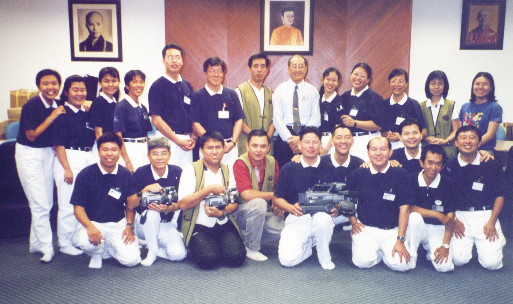
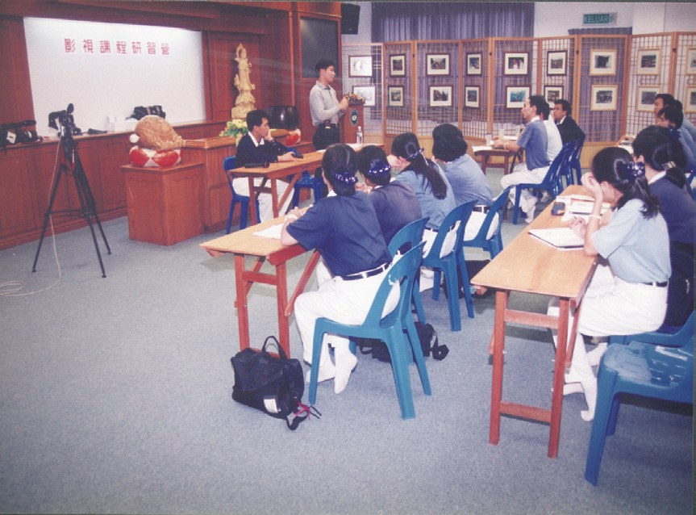
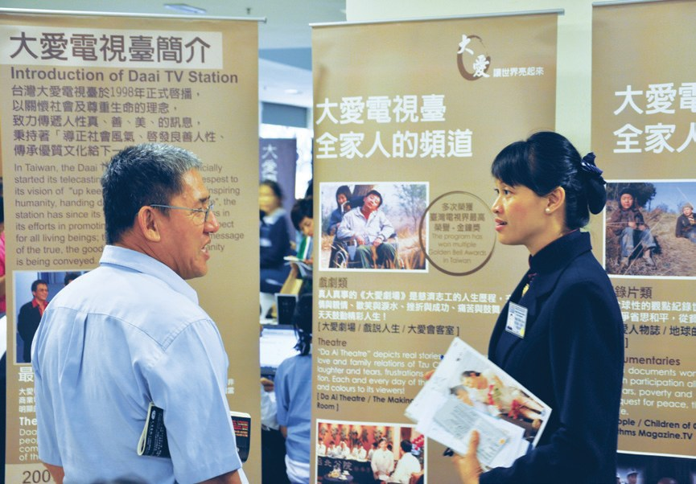
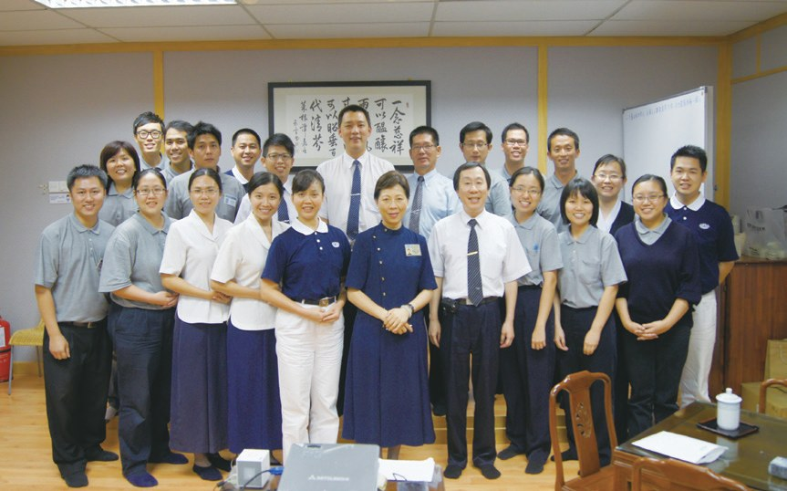
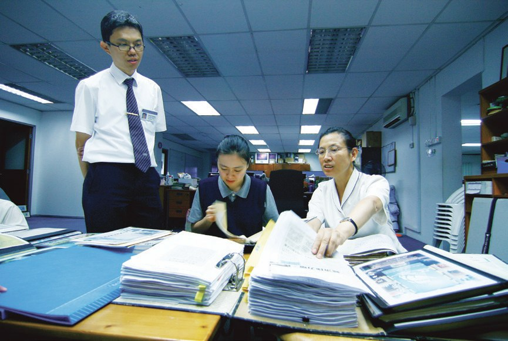
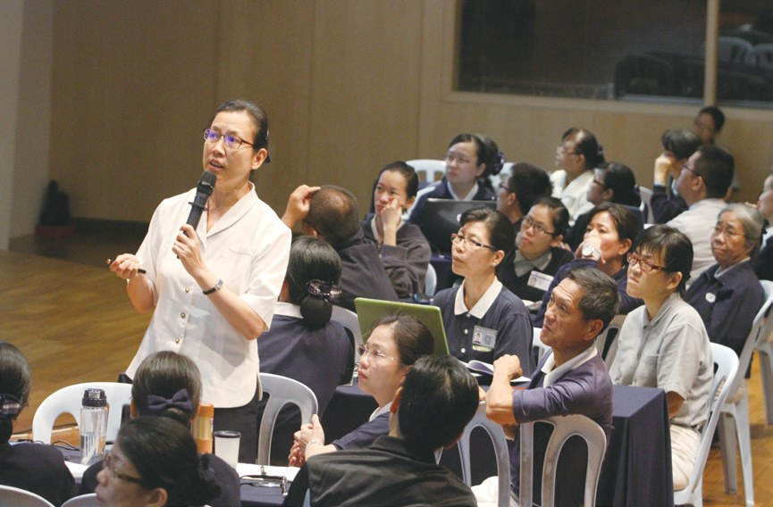

人文美善
歷史見證（上）
從一張厚紙卡開始，慈濟人怎樣記錄和分享美善？

先別急著下結論，讀完再說說你的想法～
這一篇講雪隆慈濟的「人文」怎樣起步：最早只是一位志工拿照片黏在厚紙卡上，後來有了錄影機、影視組、月刊。
上篇你會讀到大愛之夜、《大馬慈濟情》、MY DAAI頻道和《慈濟世界》，最後是這套慈濟史怎樣寫成的。
下面是原書的節錄，紅色底線是我們替你標出的轉折點。
讀之前：你覺得為什麼要把做過的好事記錄下來？
從厚紙卡開始
那時電腦製圖還不發達，就用厚紙卡、照片和手寫圖解。閱讀引導
劉濟雨用彩色的厚紙卡，黏上照片和手寫圖解製成文宣看板或檔案本儲存，成為南馬慈濟最早的文宣品。

就是最早的文宣！
……劉濟雨覺察到單靠相片和文字並無法完整呈現，若要回首過去不能只憑記憶。
於是購買錄影機，邀約志工專門為慈濟活動留下影音圖文記錄。
……一人身兼多職，為慈濟活動留下文史記錄。

又拍照又寫字？

1998年1月1日大愛電視臺開播，以「報真導正」為理念，關懷社會、尊重生命，傳遞真善美的人間事。
……將當地慈濟的感人故事加以剪輯，再寄送給大愛臺製成新聞報導。

看不到，就辦一場晚會
在馬來西亞，當時不能直接收看大愛臺。閱讀引導
11月8日，在吉隆坡天后宮舉辦的場次共吸引超過一千五百位民眾出席參與……

由於馬來西亞政府為了監督媒體而控管衛星裝設，在地慈濟人無法直接收看大愛臺……
看不到大愛臺？
……自2008年，大愛之夜力邀故事本尊與劇中主演藝人分享心路歷程。
《雨露》以慈濟志工劉濟雨與簡慈露在中南馬及東馬推動慈濟志業的心路歷程為故事藍本，講述馬來西亞的慈濟事蹟。
拍成了大愛劇場！
- 超過1,500位2000年天后宮場次出席p.497
- 36場至2022年共舉辦p.498
自己拍，傳到各地
馬來西亞團隊開始自己製作專題節目。閱讀引導
「馬來西亞團隊製作影視新聞多年，不但掌握在地志業的發展，也累積了足夠的報導題材……」
大愛臺副總監張尊昱認為・p.499……記錄救災行動、照顧戶的生命故事、慈善救助事件等。

……每週六上午播出一集，將馬來西亞慈濟感人事蹟傳播到世界各地。
猜一猜閱讀引導
截至2021年，《大馬慈濟情》共404集，雪隆團隊承擔製作了多少集？
……特別委託雪隆分會新聞組前往，自此每年皆有影視組同仁前往負責報導取材。
……追蹤全球海洋垃圾的旅程。此報導榮獲2021年「全球華文永續報導獎長片類優等獎」及「吳舜文國際新聞報導獎」……
得獎了！
網路上的好故事
人們更常從網路取得訊息了。閱讀引導
……因應現代人影視閱讀習慣，雪隆分會影視組製作大約5分鐘的短片《綻放》……
……雪隆分會製作的短片榮獲特優作品《活在方格內》……
2020年4月，人文發展室正式推出的「MYDAAI頻道」，致力製作本土內容……
人物訪談《暖心客廳》，邀請不同領域、不同年齡與身分的嘉賓，分享他們的生命故事……

都來說自己的故事。
一份免費的刊物
從手寫翻譯稿，到這一套慈濟史。閱讀引導
……需要辦一份本地期刊，宣導慈濟訊息及廣傳好人好事，於是著手相關編輯作業。
……《慈濟世界》是少數有持續出版超過二十多年的免費刊物……
不良於行的羅絲阿姨行動不便，只能以爬行的方式做家務，但卻能克服困境成為環保志工。

還去做環保！
……翻譯資料皆為手稿，由同仁電腦打字後印出，經由來回校稿完成定稿。
要來回校好幾次。
……讓更多母語不是中文的民眾更認識慈濟，一起投入行善。

……彙編成有系統的書冊，讓慈濟走過的志業足跡都能完整留存。

……彙整了三十多年的史料，回傳花蓮本會編纂處，並於2023年邁入出版流程。
是這樣來的！
停一停：誰讓你記住了？閱讀引導
選一位你印象最深的人。沒有標準答案。
有人用厚紙卡做文宣，有人鼓勵在地團隊自己拍，有人爬著做家務也去做環保。哪一位讓你最有感覺？

一起回頭看看吧～
回望
依本章原文整理，每一條都標了原書頁碼。閱讀引導
背後原因
為什麼要記錄

小川做好事就好，為什麼還要拍下來、寫下來？
- 記憶不夠
若要回首過去，不能只憑記憶。p.495
- 拿起錄影機
邀約志工專門為慈濟活動留下影音圖文記錄。p.495
- 報真導正
把真實感人的故事與全球分享。p.495–496
後續發展
雪隆人文一路走來

小禾從厚紙卡到出版慈濟史，經過了多少年？
- 1992
劉濟雨用厚紙卡製作文宣。p.495
- 1998.6
馬六甲成立「影視組」。p.496
- 1999.10.17
《慈濟世界》創刊。p.503
- 2000
開始舉辦「大愛之夜」。p.497
- 2020.4
推出「MY DAAI頻道」。p.502
- 2023
慈濟史邁入出版流程。p.506
從紙卡到網路
以前和後來
小川記錄和分享的方法，有什麼不同？
- 厚紙卡黏照片，手寫圖解影視組拍攝、剪輯新聞p.495–496
- 寄光碟來當地共修使用網路機盒直接收看大愛臺p.497–498
- 手寫翻譯稿，來回校稿英譯組翻譯影片字幕p.504–505
- 一人身兼多職人文發展室推出MY DAAI頻道p.495、502
以上只整理本章寫到的事；書裡沒寫到的，我們不替它下結論。
回頭看讀前的選擇閱讀引導
劉濟雨覺得回首過去不能只憑記憶（p.495）；《大馬慈濟情》把感人事蹟傳播到世界各地（p.500）；文史團隊彙整了三十多年的史料（p.506）。紀念、分享、回頭看，三樣都做到了。
今天我們還讀得到這些故事嗎？
只有你自己看得到喔！
準備好了就一起出發～